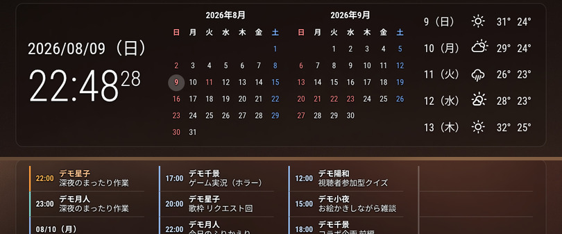
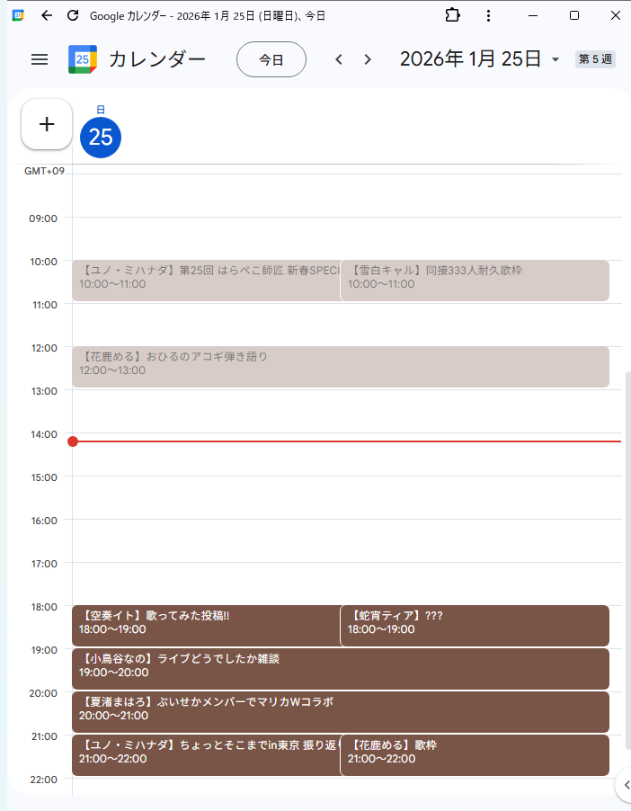
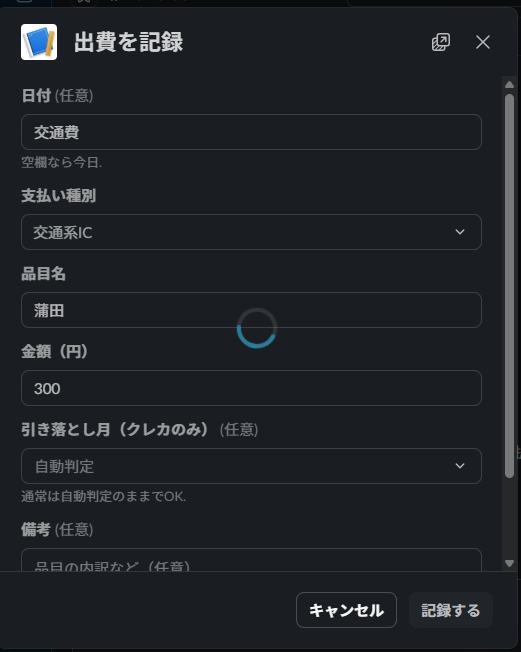
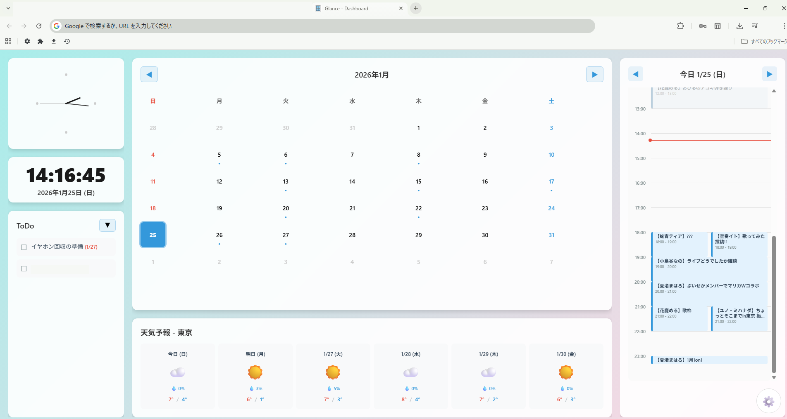
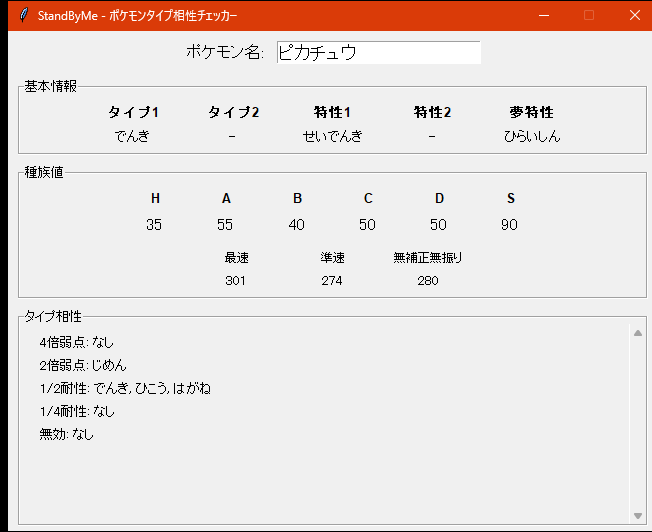
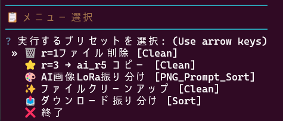
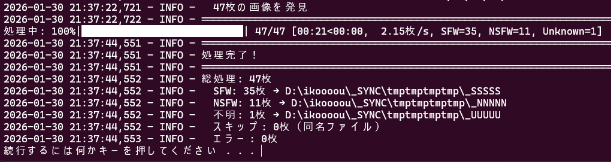
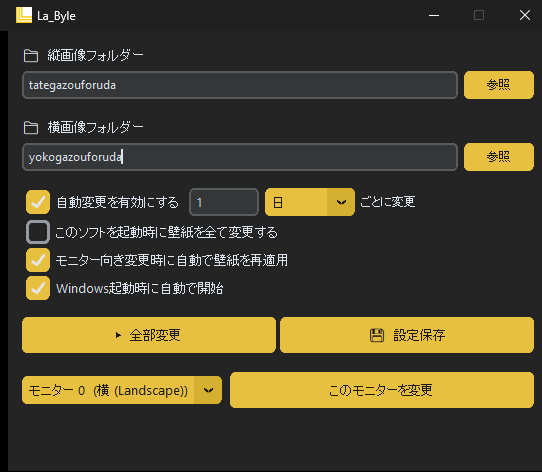

01

予定を見落とさない、入力をためない、情報を探し回らない。身近な不便を起点に、WebアプリやChrome拡張機能、自動化ツールを作っています。
生活の中で使っている、または公開しているもの

02 / 稼働中
使っていないPCとモニターを用いて「ふとしたときに確認したい情報」をまとめたスマートサイネージにしました。

03 / 公開中
YouTubeの「登録チャンネル」ページにおいて分散している動画・ライブ・配信予定を、推しのチャンネルのコンテンツだけを1画面に集約するChrome拡張です。
個人利用・開発中のものを含みます

Discord通知とカレンダー連携で、配信予定の確認を一か所にまとめたWeb版の前身です。（こちらはWeb版とは異なりiCal未使用です。）

支出を後回しにして忘れないよう、普段使うSlackからその場で記録できるようにしました。

確認先が分かれていた予定、天気、ToDoを、新規タブを開くだけで見られるようにまとめます。
用途を絞って作ったツール

対戦中にポケモンの名前を入力するだけでタイプ相性や素早さをすぐ確認できるデータビューア。ポケットモンスター第6世代（3DS）対戦環境用に開発したJavaFX版をPythonで再実装したものです。
GitHub ↗
繰り返し行うファイル整理を、YAMLのルールに沿って自動化。
GitHub ↗
画像を自動判定し、用途に応じてフォルダーへ振り分けるスクリプト。
GitHub ↗
縦・横のモニターごとに壁紙を切り替えるスライドショーアプリ。
GitHub ↗技術記事と日々の記録
制作物についての連絡やお問い合わせは、フォームまたはメールからお願いします。公開しているコードはGitHubで確認できます。